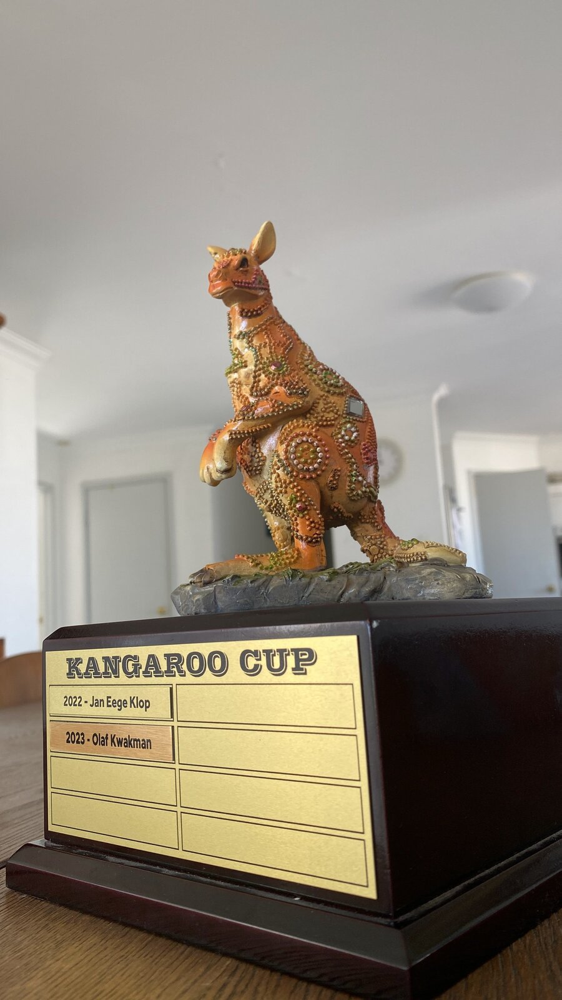
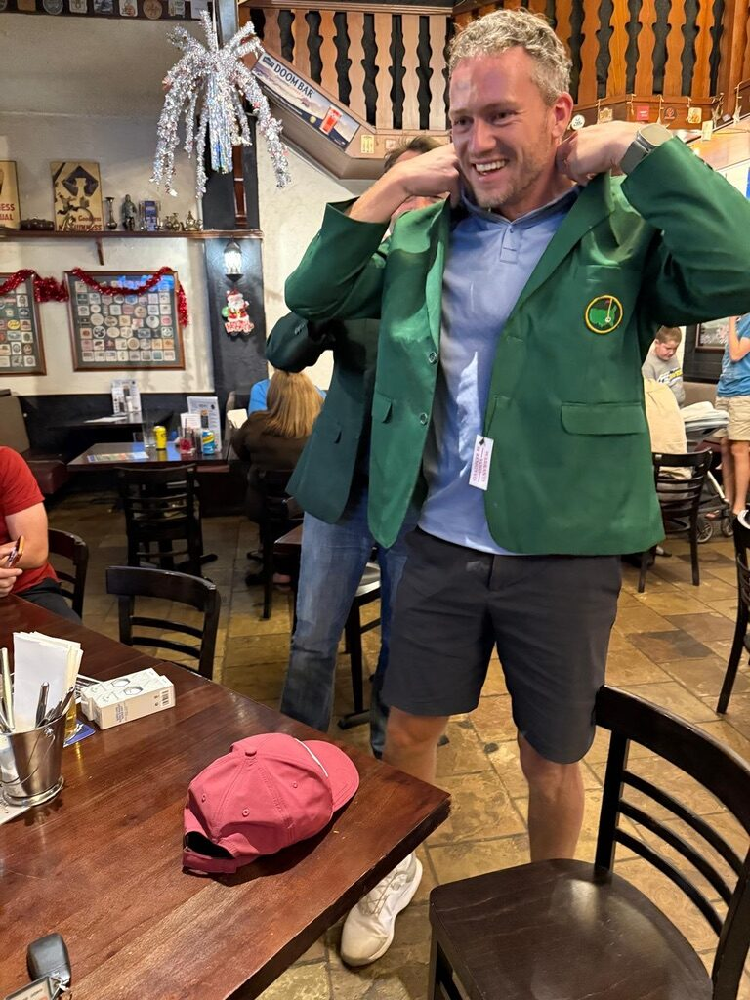
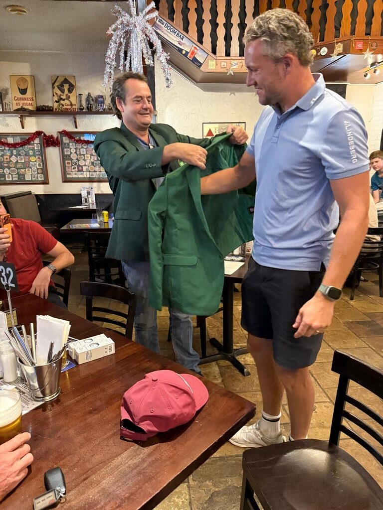
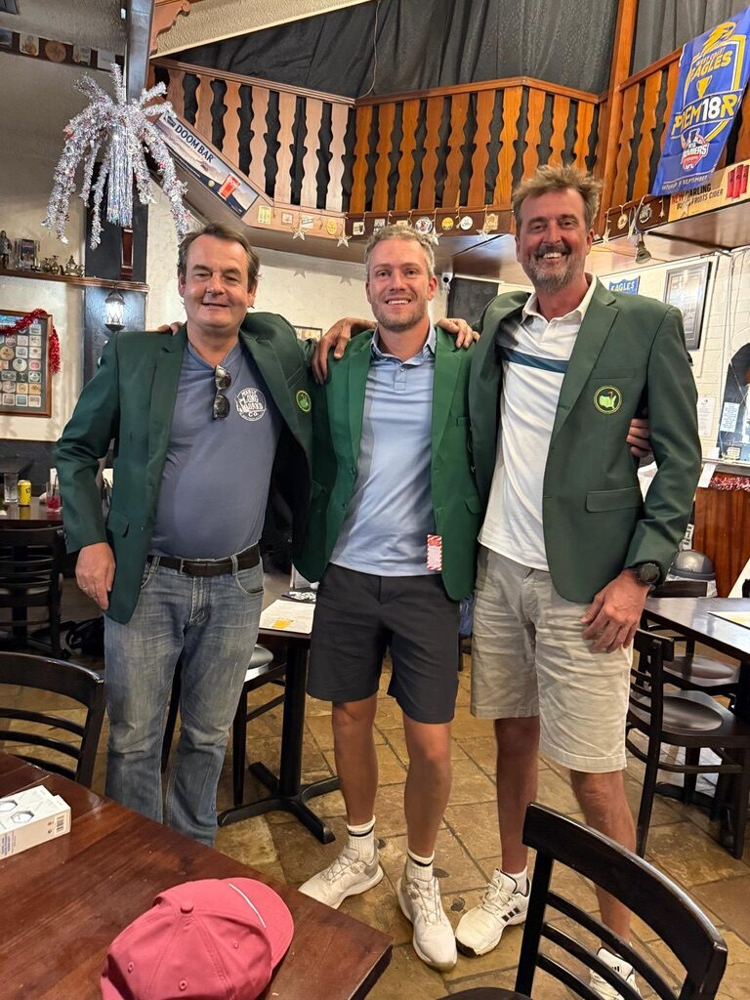

The trophy
The trophy is a precious, custom designed kangaroo statuette, engraved with the names of all winners and glued back together multiple times. He/she/they is handed on to the new champion each year. So far the plate reads Jan Eege Klop (2022) and Olaf Kwakman (2023), with more rows waiting to be filled in.
Champions through the years
Pulled from the same js/data.js file as the Rankings
page. Fill in a "champion" for each year and it shows up here.
The green jackets



Notes
Traditionally based out of a share house in Perth's northern suburbs, 1 Bantry Court, Kallaroo.